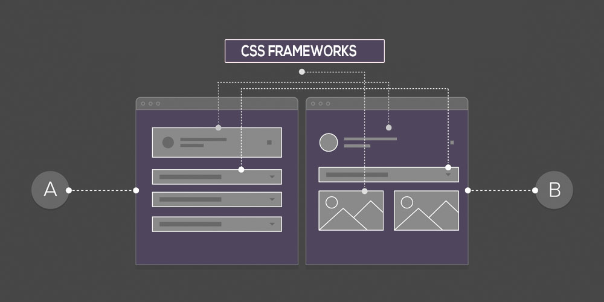

Frameworks CSS
Los frameworks se utilizan en el ambiente de la programación de aplicaciones desde hace años. Un frameworks de CSS es
una biblioteca de estilos genericos que pueden ser usada para lograr implementar diseño de sitios web, es un conjunto
de herramientas, hojas de estilos y buenas prácticas que permiten al diseñador web olvidarse de las tareas repetitivas
y que permite centrarse en los elementos únicos de cada diseño para aportar un mayor valor.
Los frameworks CSS más completos incluyen utilidades para que el diseñador no tenga que trabajar en ningún aspecto
genérico del diseño web. Por este motivo, es habitual que los mejores frameworks CSS incluyan herramientas para:
- Neutralizar los estilos por defecto que aplican los navegadores. Se trata de la habitual hoja de estilos reset.css que todos los diseñadores profesionales utilizan.
- Manejar correctamente el texto, de forma que todos los contenidos se vean exactamente igual en todos los navegadores y que sean adaptables para mejorar su accesibilidad y permitir su acceso en cualquier medio y/o dispositivo.
- Crear cualquier estructura compleja o layout de forma sencilla, con la seguridad de que funciona correctamente en cualquier versión de cualquier navegador.
- Ultimamente han comenzado a utilizarse para programar y diseñar aplicaciones web, en estos momentos existen diferentes frameworks para CSS.
Recuperado de: https://uniwebsidad.com/libros/css-avanzado/capitulo-5
Foto tomada de: https://designseer.com/best-responsive-css-frameworks/
Posicionamiento Web
El posicionamiento web o tambien llamado posicionamiento SEO (por sus siglas en inglés Search Engine Optimization) son un conjunto
de técnicas que se aplican en una página web para lograr el objetivo de mejorar la posición y visibilidad en las páginas de resultados
de los principales navegadores.
Como tal el posicionamiento web es cuando nosotros realizamos alguna búsqueda en cualquier navegador y en este nos aparece un listado
de algunas páginas que podrían tener lo que necesitamos o estamos buscando, aquí es donde ingresa el SEO, genera esa posición en las primeras
paginas sobre lo que el usuario está buscando a su interés.
Dato Informativo: Google es el buscador más utilizado en ordenadores móviles y tablets, con una cuota de mercado de 92,31%, Recuperado de: https://es.godaddy.com/blog/que-es-posicionamiento-seo/
El SEO o posicionamiento SEO también es conocido como posicionamiento web, posicionamiento natural o posicionamiento en buscadores. Todos estos términos hacen referencia a lo mismo, la optimización de una web para mejorar su posición en las SERPs (acrónimo de Search Engine Results Page) de Google o cualquier otro buscador.
Posicionamiento web: SEO on-page y SEO off-page
Este conjunto de acciones enfocadas a mejorar la posición de tu web en Google pueden realizarse tanto dentro como fuera de la web. Es por ello que debemos distinguir entre SEO on-page y SEO off-page. Veamos en qué consiste cada uno de ellos.
SEO on-page
El SEO on-page hace referencia al conjunto de técnicas que se aplican en la propia página web que queremos posicionar. Por ejemplo, algunos factores a la hora de optimizar el SEO on-page de una web son:
- Mejora de la velocidad y optimización de tu web
- Optimización de imágenes
- El Sitemap.xml
- Creación de contenido de calidad
- Buena experiencia de usuario web
- Buena estructura de las etiquetas HTML (H1, H2, H3…)
- Uso de redes sociales
- Estrategias de Link Building
- Guest blogging
- Registro en directorios (Ej: Google My Business)
SEO off-page
En este caso podemos definir el SEO off-page como el conjunto de técnicas que llevamos a cabo fuera de nuestra web pero que también ayudan a mejorar la posición de tu página en buscadores. Por ejemplo, algunas de estas técnicas son: